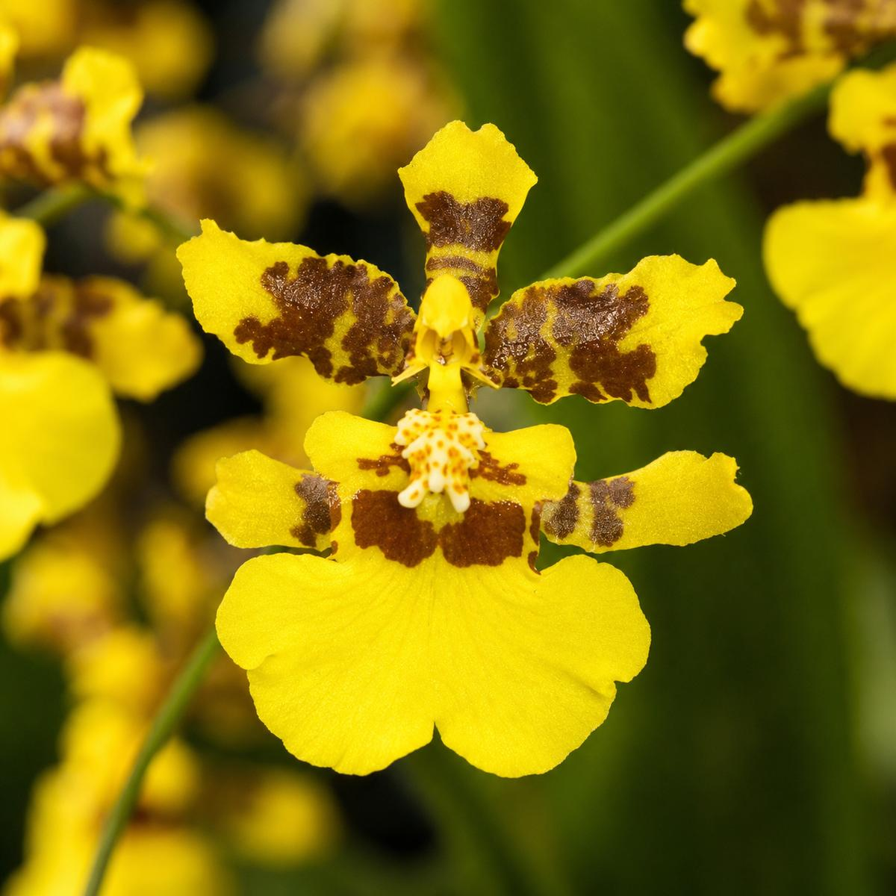
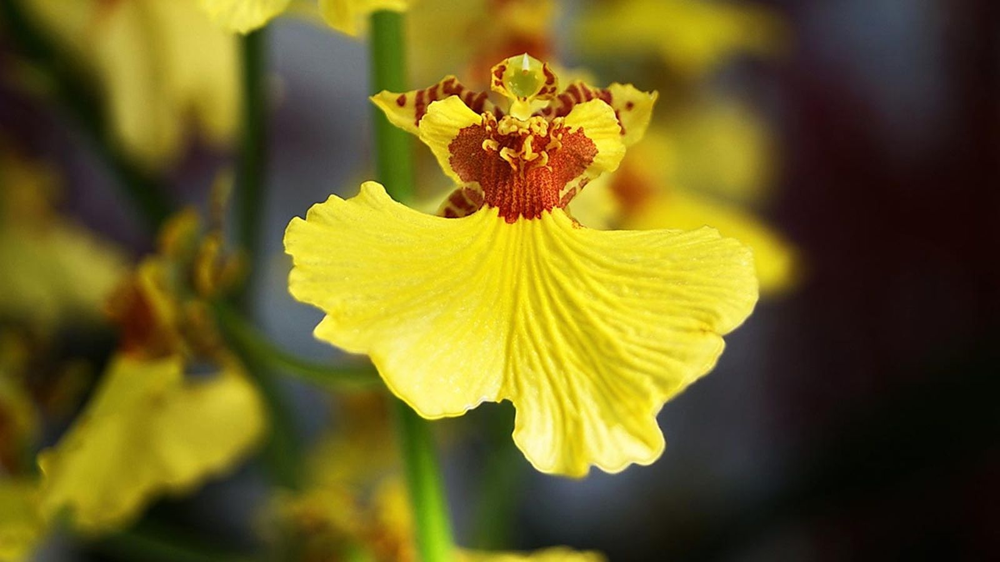
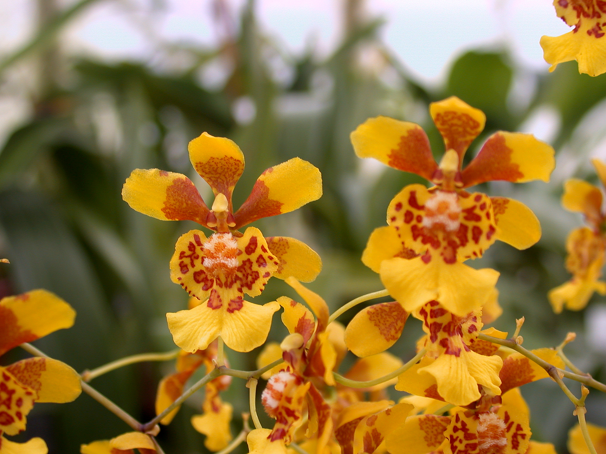
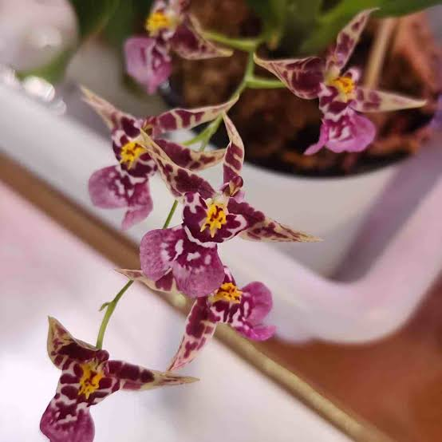

Oncidium (Orquídea bailarina)
El Oncidium, conocido como orquídea bailarina, es una orquídea muy llamativa por sus numerosas flores pequeñas y coloridas. Su nombre popular se debe a que sus flores tienen una forma que recuerda a pequeñas bailarinas en movimiento. Es originaria principalmente de América tropical y es apreciada por su belleza y abundante floración.
Características:
- Flores pequeñas y numerosas.
- Predominan los colores amarillo, marrón, rojo y blanco.
- Sus flores tienen una forma similar a una pequeña bailarina.
- Sus hojas son alargadas y delgadas.
- Prefiere lugares con buena iluminación indirecta.
- Necesita riego moderado y buena ventilación.



